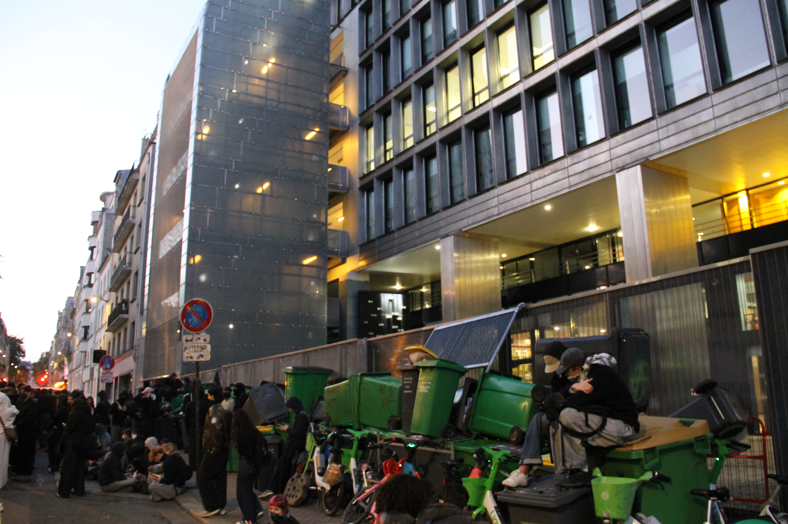
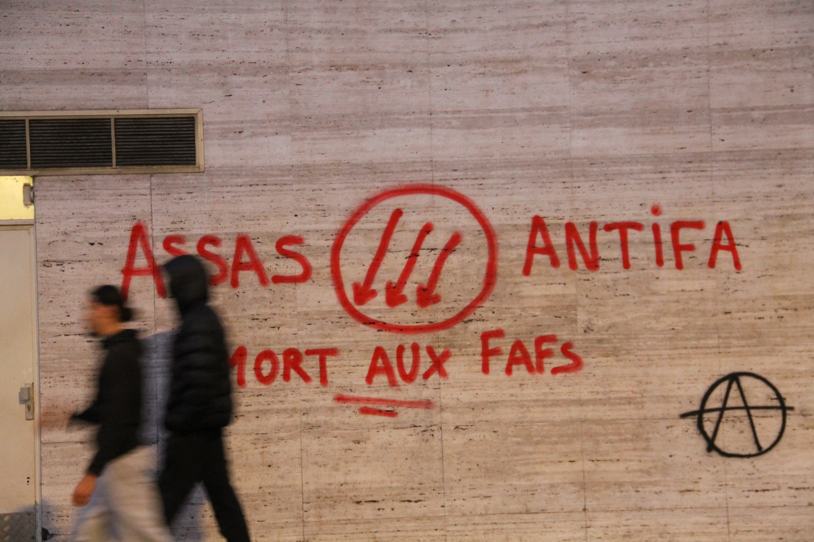
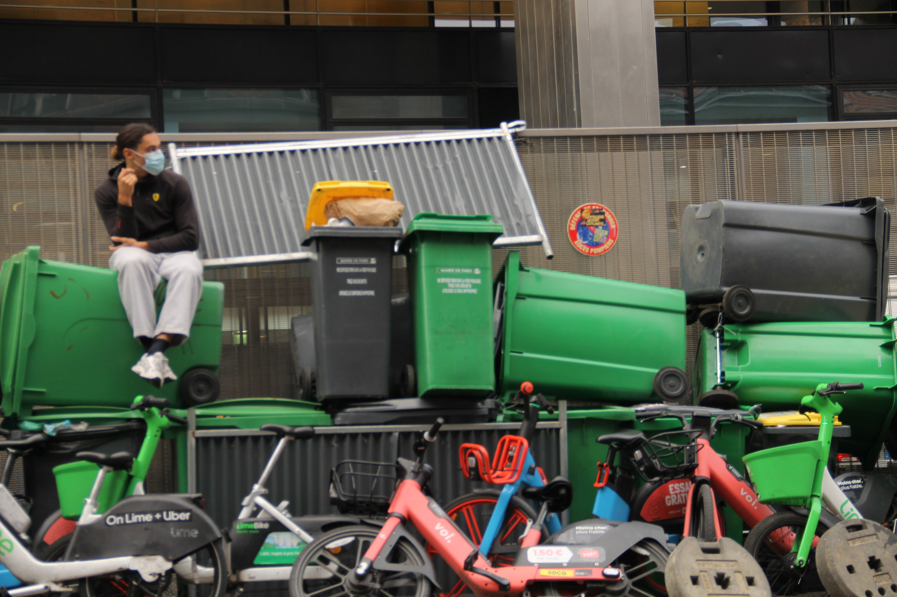
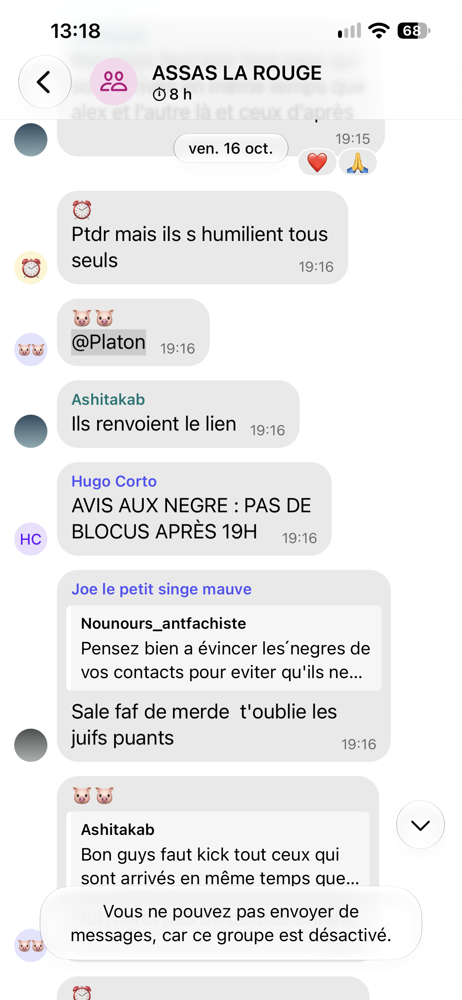

À Assas, une nuit de blocus avant le 17 octobre
Le 16 octobre au matin, un blocus se forme devant la faculté parisienne d’Assas. Face au manque de réaction du gouvernement, la colère monte chez ces étudiants qui s'organisent pour se faire entendre.

©Alexandre Ligneul
Le rendez-vous a été fixé à 5 h 45 à Port-Royal, puis à 6 h devant l'université Paris-Panthéon-Assas. Il fait encore nuit noire dans la rue d'Assas, totalement vide. Paris dort. La révolte, elle, se prépare.
Ils ne sont que trois. Eloi, étudiant à Paris 8, s'est levé à 4 h 40 pour avaler un petit-déjeuner et faire les quarante-cinq minutes de trajet. À Port-Royal, il n'a trouvé que trois ou quatre personnes. Il a décidé de venir quand même avec son colocataire, « pour voir ». Devant la fac, un inconnu avait déjà commencé seul à aligner quatre poubelles. « On avait peur au début, on ne savait pas si c'était un gudard ou pas. Le premier contact, c'est toujours difficile », raconte Eloi. Les « gudards », ce sont les militants d'extrême droite proches du GUD. Assas a la réputation d'être une fac de droite, et ceux qui veulent la bloquer savent qu'ils risquent de tomber sur une extrême droite organisée et violente, présente dans les couloirs comme aux abords de l'établissement.
Les trois étudiants masqués se font aborder par une voiture de police qui s'arrête à leur hauteur. Les agents les contrôlent un par un, puis après un échange sur leurs revendications demandent la dispersion du petit groupe. Depuis un bureau à l'intérieur de l'établissement, deux hommes les observent.
« Stéphane Braconnier, le président d'Assas, a le bras long », glisse un étudiant. Selon les militants, le président disposerait d'une ligne directe avec la police pour compliquer au maximum les blocus. D'autres rumeurs circulent dans la fac : une étudiante confie qu'il deviendrait ministre de l'Éducation si le RN remportait la présidentielle de 2027. Ces soupçons nourrissent la colère des étudiants antifascistes et de gauche.
En attendant les renforts, le petit groupe continue d'aller chercher des poubelles. Certains riverains, plantés devant leur porte à 5 heures du matin, refusent de laisser partir les leurs. Eloi ne leur en veut pas : « Si on demandait aux gens "est-ce qu'on peut prendre vos poubelles ?", très peu diraient oui. Donc on les prend sans demander, et on les rend après. » Il insiste : les poubelles brûlées occupent une large place dans les médias, mais ici, elles servent à bloquer temporairement, pas à faire des feux. Presque toutes sont rendues à leurs propriétaires.
Il assume de franchir la ligne de la loi et parle de « désobéissance civile non violente ». Pour lui, ce qui compte n'est pas la légalité mais la légitimité. Il rappelle que le mariage entre personnes de même sexe était illégal il y a encore quelques années.
Les premiers renforts
Quarante-cinq minutes passent. Une dizaine de personnes seulement ont rejoint le groupe, mais les profils sont variés. Deux colosses en tenue paramilitaire, le visage caché derrière des masques qui parodient le jeu Call of Duty, assurent la sécurité. Ils sont équipés d'une barre de fer et d'une trousse de soins. Ils redoutent une attaque surprise : deux jours plus tôt, un affrontement a éclaté au même endroit. Jets de bouteilles en verre, coups violents, intervention des forces de l'ordre. Deux militants ont été grièvement blessés et hospitalisés.
Très vite, de petits groupes se forment. Chacun part récupérer les poubelles d'une rue voisine, des vélos en libre-service et tout le mobilier urbain disponible. Les vélos sont attachés entre eux avec des colliers de serrage, posés deux par deux, « c'est plus chiant à enlever ». Sur un mur, quelqu'un a tagué « Assas antifa ».
Pourquoi bloquer, et pourquoi Assas
Eloi détaille les raisons du blocus. Il y a d'abord le soutien aux lycéens, à leurs revendications et surtout face à la répression qu'ils subissent. « Si le gouvernement leur avait donné ce qu'ils demandent, nous, on n'aurait pas bloqué. » Viennent ensuite les revendications propres aux étudiants : adapter les locaux au dérèglement climatique, financer davantage la recherche et l'enseignement supérieur, mieux payer les enseignants. Selon lui, l'accès au master est devenu une « catastrophe », avec des taux d'admission de 4 à 5 % dans certaines formations parisiennes. « Une société sans connaissances, c'est la mort à terme de l'économie, de tout ce qu'on veut. »

©Alexandre Ligneul
Bloquer Assas a aussi une portée symbolique. L'université est historiquement ancrée à droite, voire à l'extrême droite. Lors d'un précédent blocus, un journaliste de Blast leur a raconté avoir couvert une tentative de blocage en 1968, et la virulence des étudiants d'Assas envers les manifestants de gauche. « Bloquer Assas, ça ne veut pas dire qu'Assas est de gauche, précise Eloi. On veut dire qu'une fac n'est pas censée être de gauche ou de droite. Elle est censée répondre à la science. » Il cite le « paradoxe de la tolérance » du philosophe Karl Popper pour justifier le rejet de l'extrême droite : on ne peut être intolérant qu'avec l'intolérance elle-même.
6 h 30, le cortège arrive
Vers 6 h 30, une soixantaine d'étudiants arrivent en cortège. Ils sortent d'une réunion préparatoire tenue non loin, dans le quartier. « Ça y est, ça fait du bien, ça rassure », souffle Eloi. Sur le pas de leur porte, des riverains les regardent passer. Certains surveillent leurs poubelles, d'autres encouragent les étudiants, quelques-uns grognent à voix basse. Un passant lance un « merci » au groupe. Eloi y voit la preuve « en direct » du soutien populaire au mouvement.
Personne ne se connaît vraiment. Il n'y a pas de grande organisation, plutôt des « actions autonomes ». Pour des raisons de sécurité, chacun reste plus ou moins anonyme. Eloi désigne un militant : c'est leur deuxième blocus ensemble à Assas, ils échangent sur Signal, mais il ne connaît pas son prénom.
Avec le premier groupe, une partie des nouveaux venus part bloquer l'arrière de l'université pour empêcher qu'on contourne le blocus. Dans cette petite rue, ils ne sont d'abord qu'une poignée, alors que devant, la foule approche bientôt la centaine. Rue Notre-Dame-des-Champs, un gardien de nuit les interrompt. Il descend de sa voiture en faisant de grands gestes : « Ne touchez pas à mes plots ! Laissez-moi bosser et ne me cassez pas les couilles ! » Eloi fait redescendre la tension : « On va vous rendre vos plots, pas de stress. » Après discussion, il coordonne les étudiants pour remettre en place la trentaine de plots déplacés. L'ambiance se réchauffe. En repartant, le gardien lance : « Bon courage les jeunes ! » Le mouvement est plus populaire que ce que laissent paraître les journaux télévisés, et c'est l'une des surprises de cette matinée.

©Alexandre Ligneul
Au lever du jour, un blocus tranquille
Le jour se lève sur Assas. Le blocus est installé. La peur d'être délogé par la police ou attaqué par l'extrême droite s'est dissipée. Les jeunes s'assoient sur les poubelles ou en cercle par terre. On discute, certains ont apporté des sandwichs et des tartines pour le petit-déjeuner.
Tout s'organise. Dans un coin, ils dessinent des pancartes. Dans un autre, ils préparent à manger. Ailleurs, on réfléchit à la suite du mouvement : organiser des réunions, rédiger un cahier de doléances. Chacun peut prendre le mégaphone à son tour pour proposer une idée, signaler un point de vigilance ou partager une inquiétude. Ils parlent de la protection de l'anonymat, de la participation d'étudiants d'autres facs aux actions.
Pour Eloi, ces moments comptent aussi pour le moral. Il évoque une « vraie détresse psychologique » chez les jeunes, de droite comme de gauche. « Ça fait du bien de voir qu'on n'est pas seuls. Ça ne va pas, mais on est nombreux à vouloir que ça aille mieux. »
Les revendications s'expriment dans le calme. Deux rues plus loin, une douzaine de camions de CRS stationnent mais n'interviendront pas.
Juste à côté, le lycée Montaigne est lui aussi bloqué, cette fois par des élèves plus jeunes. Quelques étudiants viennent les soutenir.
La direction a annoncé la fermeture de l'université pour la journée, mais certains étudiants l'ont appris trop tard. Ils se retrouvent un peu plus bas dans la rue, restent une dizaine de minutes, puis repartent. Andréa est l'une d'eux. « Je comprends la mobilisation mais je n'y participe pas. Je ne me sens pas légitime, et l'ancrage politique des organisations de gauche qui mènent le mouvement ne me donne pas envie de m'y associer. » D'autres étudiants s'inquiètent surtout que les blocages se multiplient à l'approche des partiels du premier semestre.
Il est 11 h quand Eloi décide de partir. Les militants se relaient. L'université restant fermée, inutile de tenir le blocus toute la journée. « Je rentre me préparer et me reposer pour demain ! » lance-t-il en pensant au 17 octobre. Pour beaucoup, la mobilisation est loin d'être terminée.

Conversation sur la messagerie crypté Signal infiltré par des militants d'extrême droite ©Alexandre Ligneul
Pour préserver l'anonymat des sources citées, les prénoms ont été modifiés.